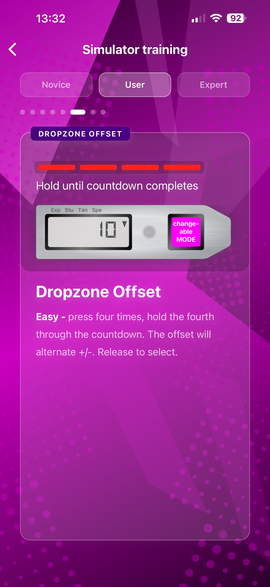
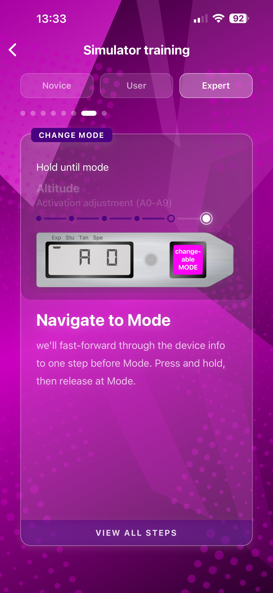
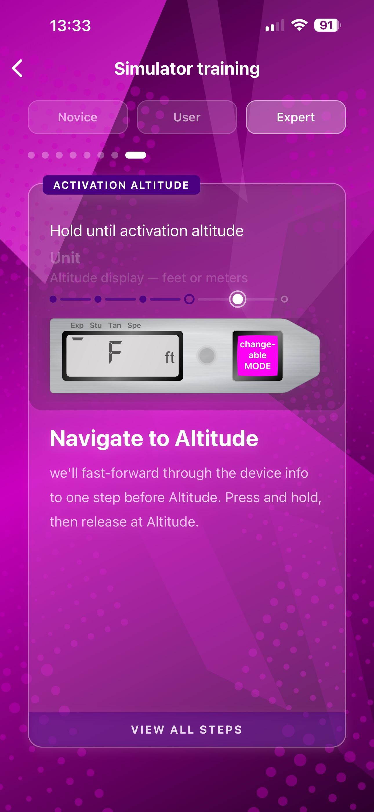
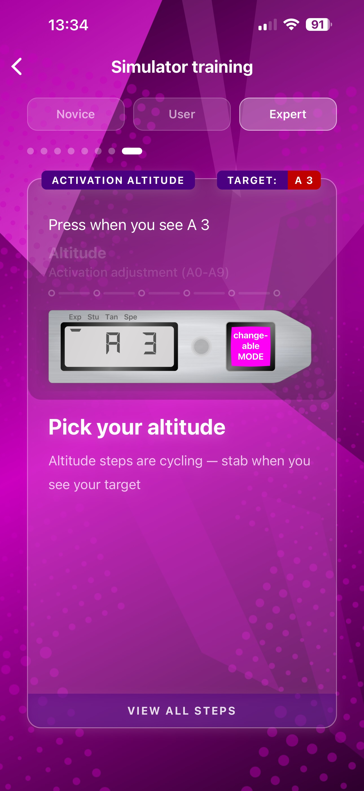
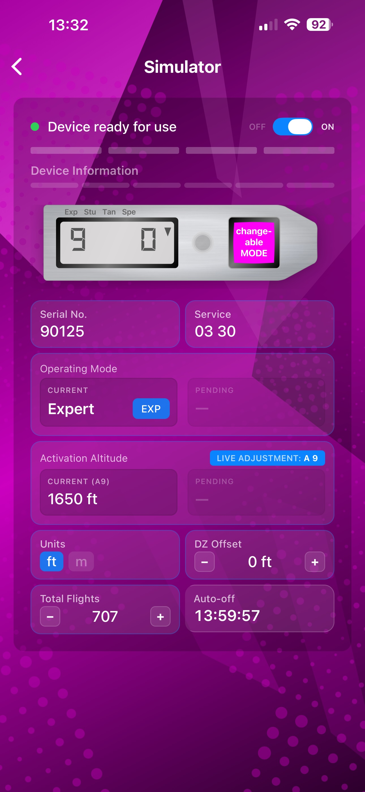

Qué es
Botón a botón, sin el equipo sobre la mesa.
La soltura con la secuencia de control del CYPRES 2 se adquiere antes cuando puedes ensayar sin restricciones. Soft-CYPRES reproduce la pantalla, los tiempos de pulsación, las señales LED y cada modo operativo — para practicar en casa, en el avión o entre saltos sin tocar nunca un equipo real.
Lecciones
Aprender haciendo. Ocho lecciones guiadas en tres niveles.
Cada lección enseña una habilidad concreta con retroalimentación inmediata — pulsar, mantener, soltar, confirmar. Sin manuales que memorizar, sin vídeos por saltar.
Principiante
FundamentosLa pulsación (Stab)
Domina la pulsación breve y deliberada sobre la que se basa cada comando del CYPRES 2.
Secuencia de encendido
Aprende el ritmo de cuatro pulsaciones — sincronizadas con el LED — que despierta el equipo.
Secuencia de apagado
El mismo método de cuatro pulsaciones, a la inversa, con la confianza de conocerlo al dedillo.
User
Uso cotidianoMostrar datos del equipo
Pulsación larga para recorrer seis pasos de información — saltos, número de serie, revisión, unidad, altitud, modo.
Cambiar unidad
Cambiar entre pies y metros con una navegación en tres pasos, mantenimiento de LED y confirmación.
Offset de la DZ
Establecer la diferencia de altitud entre el punto de salida y la zona de aterrizaje — en pasos de 30 ft o 10 m.
Expert
Control totalCambiar modo
Seleccionar Expert, Student, Tandem o Speed mediante una secuencia de confirmación en tres pasos.
Ajustar la altitud de activación
Regular la altitud de activación automática entre los pasos A0–A9 mediante un flujo pulsar-mantener-seleccionar.




Escenarios
Dieciséis retos del mundo real.
Desde un demo alpino en Suiza hasta un salto wildcard en Eloy — cada escenario te da un briefing y te sitúa frente al equipo. Lo configuras correctamente o vuelves a intentarlo.
Offset
5 escenarios- Interlaken, Suiza
- Empuriabrava, España
- Aviemore, Escocia
- Royal Albert Docks, Londres
- Camps Bay, Ciudad del Cabo
Activación
7 escenarios- Seychelles — mástil de radio
- Ciudad de Panamá — torres
- Singapur — rascacielos
- La Habana — monumento
- Río — hoteles
- Mónaco — torres
- Cataratas Victoria — penacho de agua
Combinado
4 escenarios- Salto en playa, Aruba
- Bogotá, Colombia
- Santorini, Grecia
- Queenstown, Nueva Zelanda
Wildcard
2 escenarios- Himalaya, Nepal — altitud extrema
- Eloy, Arizona — cambio a metros

Playground
El equipo completo, sin raíles.
Explora cada estado del equipo a tu ritmo. Sin lección, sin escenario — solo tú y el CYPRES 2.
- Enciende y apaga y observa la secuencia de autoprueba
- Recorre la información: saltos, número de serie, revisión, unidad, altitud, modo
- Cambia modo de operación — Expert, Student, Tandem, Speed
- Ajusta la altitud de activación de A0 a A9
- Define un offset de DZ en pies o metros
- Observa el temporizador de apagado automático de 14 h en tiempo real
Controles
Tiempos de pulsación, señales LED y autoprueba — recreados.
El simulador distingue la pulsación breve (stab) de la pulsación larga y reacciona como el equipo real. Cada destello de LED, cada transición de pantalla, cada indicador de modo está modelado a partir del CYPRES 2 auténtico.
Stab vs. pulsación larga
Un toque rápido para seleccionar, un mantenimiento prolongado para navegar — el mismo umbral que tus dedos deben aprender en un equipo real.
Autoprueba al encender
Cuatro destellos de LED sucesivos, como en la verdadera secuencia de arranque. Confirma la preparación antes de cualquier cambio de modo.
Apagado automático a las 14 h
Cuenta atrás en vivo en pantalla. Coincide con el comportamiento del equipo real — o desactívalo en ajustes para entrenar.
A0 hasta A9
Diez pasos de altitud de activación, de 30 ft cada uno, ajustables con el auténtico flujo pulsar-mantener-seleccionar.
Cuatro modos operativos
Expert, Student, Tandem, Speed — cada uno con su propio perfil de activación y confirmación de cambio de modo.
Offset de la DZ
Establecer la diferencia de altitud entre salida y aterrizaje en pasos de ±30 ft (o ±10 m).
Diseño
Oscuro, táctil, deliberado.
La interfaz respeta el espíritu del hardware: una pantalla metálica bajo cristal, acentos magenta, movimiento físico tipo muelle y una estética oscura y discreta que no estorba.
Efecto glassmorphism
Pastillas y tarjetas translúcidas sobre un degradado profundo — la información parece levitar sobre la superficie.
Animaciones tipo muelle
Cada transición usa movimiento físico con entrada escalonada. Nada salta, nada se retrasa.
Retorno háptico
Cuatro niveles de intensidad en el Taptic Engine del iPhone. Un simple interruptor en Android, ya que los motores de vibración típicos no distinguen intensidades.
Modo oscuro por defecto
Coincide con la estética del equipo real y es más amable para los ojos en un avión. Modo claro a un toque en los ajustes.
Idiomas
Seis idiomas. Terminología fiel al manual.
Cada idioma usa la terminología exacta del manual oficial del CYPRES 2 para esa región — lo que aprendes aquí es lo que verás y oirás en la DZ.
Sin conexión & privado
Sin cuentas. Sin rastreo. Nada que se pueda filtrar.
Soft-CYPRES se ejecuta por completo en tu dispositivo. Sin registro, sin peticiones de red, sin analíticas, sin SDKs de terceros que recojan datos. Tu elección de idioma, tu preferencia háptica, tus últimos ajustes — guardados en tu teléfono, en ningún otro sitio.
Herramienta independiente
Soft-CYPRES es una aplicación independiente de entrenamiento y familiarización. No está producida, respaldada ni afiliada a Airtec GmbH. CYPRES y CYPRES 2 son marcas de Airtec GmbH & Co. KG Safety Systems. Esta aplicación no sustituye la formación oficial CYPRES, la documentación del fabricante ni la experiencia práctica con el equipo real.